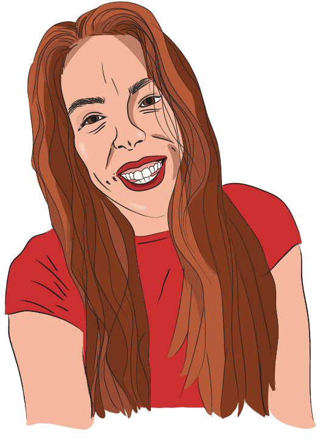

Karine Simard

Bonjour, mon nom est Karine je suis présentement étudiante à l’Université de Montréal, j’effectue un diplôme d’étude supérieure spécialisée en Art, création et technologie. Ayant obtenue mon baccalauréat en étude cinématographique au printemps dernier, je m’intéresse beaucoup à la vidéo, à la conception sonore et aux arts visuels. Ainsi, j’ai une bonne connaissance des logiciels de la suite créative d’Adobe et j’aime mettre mes connaissances et ma création à l’œuvre. L’équipement cinématographique aussi m’est familier puisque j’ai participé à la conception de plusieurs court-métrages. Au courant de la session dernière, j’ai pu toucher à des logiciels comme Unity, Processing et Blender ce qui m’a appris certaines connaissances en programmation, notamment en C#. Pour ce qui est du cours actuel, je n’ai jamais conçu de pages web auparavant mais j’ai hâte de découvrir cet univers, de comprendre le nouveau langage HTML et CSS et de pouvoir intégrer de l’animation et de l’originalité dans mes futurs projets web.

Par la suite, il y a une œuvre d’art web qui m’a bien impressionné et c’est le site de la web-série de Dead Obies sur leur processus de création et d’inspiration pour faire un album. Le site https://420.deadobies.com/fr/ est très innovateur au niveau du visuel, c’est explosif et j’adore les vidéos présentées en épisode qui mettre en scène chaque membre du groupe avec une animation de ceux-ci, les illustrations sont très intéressantes et originales. J’aime la simplicité aussi de la chose, il suffit de « scroller » vers le bas et on retrouve chacune des épisodes au fur et à mesure qu’on descend dans la page. De plus, les couleurs et les animations sont envahissantes ce qui nous garde captiver à l’écran. Aussi, les polices d’écriture et les animations de ces écritures sont impressionnantes et vivantes et j’aime beaucoup le style créé. C’est la compagnie Deux Huit Huit, une compagnie montréalaise qui a créé le design du site. Leur style épileptique et flamboyant garde l’œil attentif et je serais curieuse de savoir comment ils font pour faire apparaitre et bouger les illustrations et les animations au fur et à mesure qu’on descend vers le bas de la page.